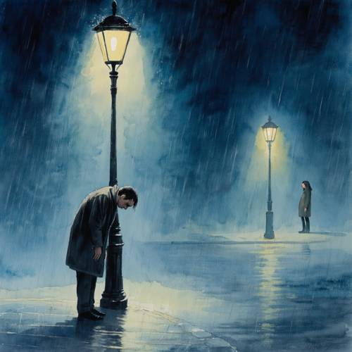
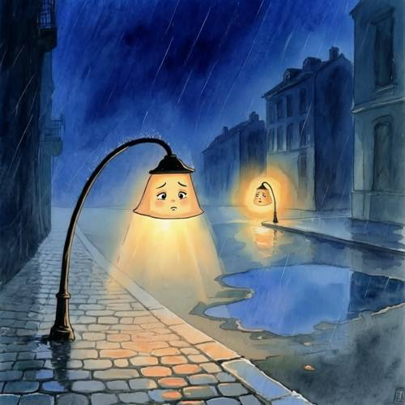
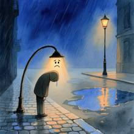
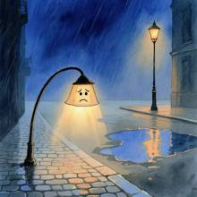
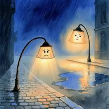
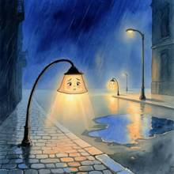

Attribute — In the watercolor painting style, a lonely street lamp lowered its hea
In the watercolor painting style, a lonely street lamp lowered its head sadly in the rainy night, and another street lamp in the distance was looking at it with concern.

Direct — one call, no iteration

Continuum — Qwen3.8-27B + Qwen-Image
Judge — Direct
FAILAttribute - Expression — The prompt requires the street lamps to have expressions ('sadly', 'with concern'). The image, however, depicts a man with his head lowered sadly, leaning against a normal street lamp. The street lamps themselves are inanimate and do not display any expressions.
FAILAction - Non-contact Interaction — The prompt specifies that one street lamp 'was looking at' the other. The image shows two static street lamps that are not capable of or depicted as performing the action of 'looking'. The interaction is instead shown between a woman in the distance looking towards a man in the foreground.
PASSStyle — The image is rendered in a style that is visually consistent with a watercolor painting, featuring color washes, soft edges, and visible textures that mimic the medium, especially in the sky and the reflections on the wet ground.
PASSGrammar - Consistency — The image correctly depicts the presence of two street lamps as mentioned in the prompt: one is prominently in the foreground, and 'another street lamp' is visible in the distance.
Judge — Continuum
PASSAttribute - Expression — The street lamp in the foreground has a face with downturned eyebrows and mouth, visually representing sadness. The street lamp in the distance also has a face with raised eyebrows and eyes directed towards the first lamp, which conveys an expression of concern.
PASSAction - Non-contact Interaction — The street lamp in the distance is turned towards the street lamp in the foreground, and its eyes are directed at it, visually depicting the action of 'looking at' the other lamp.
PASSStyle — The image exhibits features characteristic of a watercolor painting, including visible color washes and blending, particularly in the sky, buildings, and puddles. The textures and soft edges are also consistent with this style.
PASSGrammar - Consistency — The image consistently depicts two entities that are both street lamps. One is prominent in the foreground, and a second, similar one is visible in the distance.
What the agent did
Thinking
The user is asking for a watercolor painting depicting a lonely streetlamp sadly bowing its head on a rainy night, with another streetlamp in the distance gazing at it with worry. Let me generate this image in watercolor style. Key elements: 1. Watercolor painting style 2. Lonely streetlamp bowing its head, sad expression (personification) 3. Rainy night 4. Another streetlamp in the distance 5. The distant streetlamp gazing with worry (personification) Let me write a detailed prompt. Streetlamps with faces (personification) — one bows its head, the light drooping downward, with a sad expression; the other one in the distance watches over it. Rainy night, watercolor aesthetic — soft washes, bleed-through, textured paper, muted blue-gray palette, wet rain streaks. Alright, let's generate.
Step 1 — `generate_image`
{
"prompt": "Watercolor painting, rainy night scene. A lonely personified street lamp in the foreground bows its head sadly, its curved pole bent downward, soft warm lamp light dimly glowing under its drooping head, tiny sad eyes with a small frown visible on its face, standing on a wet cobblestone sidewalk. In the far distance on the other side of the street, another street lamp stands tall, leaning slightly toward the sad lamp, glowing warmly as if watching over it with concern. Gentle rain streaks falling diagonally, dark blue and indigo night sky, puddles on the street reflecting soft lamp light, watercolor washes with soft bleeding edges, paper texture, muted palette of deep blues, grays and warm amber light, gentle melancholic mood, loose expressive brushwork, empty quiet street",
"model": "qwen-image",
"width": 1024,
"height": 1024
}
Result img_0

Thinking
The image is pretty good. Let me analyze it: 1. Watercolor painting style — Yes, the watercolor aesthetic is there. 2. A lonely streetlight sadly bowing its head on a rainy night — Hmm, the foreground "streetlight" is drawn as a streetlight pole with a lamp, and its light forms a sad face. But next to it there's also a person (a figure in a coat bowing their head and weeping). Actually, the intent was for the streetlight itself to be the sad character bowing its head. Here it looks like the light beam of the streetlight has formed a face, with a separate sad old man beside it. This is a bit off — the prompt called for the streetlight to be a personified sad character bowing its head, and it was watching over by a distant streetlight. Actually, looking more carefully: the lamp head is bowing (the pole curves and the lamp is tilted downward), and the light beam has a face with sad eyes. And there's a separate human figure in a bowing, weeping posture. The human figure wasn't requested. The face is on the light beam, not on the lamp itself. Hmm, the concept of "the streetlight sadly bowing its head" — the lamp is bowing its head (the lamp is tilted downward). The face is on the light, which is a bit unusual, but it can read as the lamp's face within its glow. The human figure is an extra element that's muddying the image. 3. A distant streetlight gazing with concern — The distant lamp is there, glowing warm, on the far side of the street. But it doesn't clearly appear to be "gazing with concern" — it's a regular lamp with no visible face or expression. To convey concern, it would help if the distant lamp also had a faint face and was leaning slightly toward the sad lamp. Let me think about what to fix: - The human figure is an extra element and should be removed, so the streetlight itself is clearly the sad character bowing its head. - The sad face should be on the lamp itself (on the lamp head/lamp glass), not on the light beam. - The distant lamp should appear to be gazing with concern — with a faint face and a warm glow leaning toward the sad lamp. Options: use edit_image to remove the person and clarify that the face is on the lamp. Let me try edit_image: "Remove the old man standing on the sidewalk. Keep the curved streetlight bowing its head sadly, with the sad face (sad eyes and frown) visible on the glowing lamp itself, not on the light beam. The distant streetlight across the street is leaning slightly toward the sad lamp, with a faint worried face visible on its lamp glass, its warm light reaching out as if offering comfort." That's two changes (removing the person + face placement + face on the distant lamp). Following the multi-step composition principle, I should probably split this. But the changes are related — I'll first do one edit for removing the person and fixing the face, and if needed I'll do a second edit for the face on the distant lamp. No, let me reconsider. Current image: the lamp's pole arches, and the lamp head is bowed with a sad face on the light beneath it. It actually reads fairly well as "a streetlight bowing its head sadly." The problem is the extra human figure — it's distracting and was not requested. The distant lamp has no face/expression of concern. First edit: remove the person. The face should be on the lamp. Second: give the distant lamp a concerned expression. Let me do the first edit.
Model
The first generation is close — a rainy night, watercolor mood, a street lamp bowing its head, and another lamp in the distance. Two problems: (1) an unnecessary person (a weeping old man) has been added next to the lamp, which is diluting the concept that the *lamp itself* is the sad character; (2) the distant lamp has no expression of concern. Let's fix the person and the placement of the face first.
Step 2 — `edit_image`
{
"image": "img_0",
"prompt": "Remove the old man in the coat standing on the sidewalk; leave only the curved street lamp. The sad face with small droopy eyes and a frown should be clearly on the glowing lamp head itself, the lamp head bowed downward like a head hung in sadness, its warm glow spilling softly downward. Keep the wet cobblestones, rain, puddle, and the distant lamp exactly as they are.",
"model": "qwen-image"
}
Result img_1

Thinking
This is much better now. The person is gone. The sad face is clearly on the lamp, and it's tilting its head downward. The watercolor style is preserved. Remaining task: the lamp in the distance should appear to be gazing at the sad lamp with concern. Right now it's just a normal, upright lamp with a warm glow, and there's no sense of expression or directionality. Let's add a faint worried face to the distant lamp, and have it lean slightly toward the sad lamp, with its glow pointing that way. Edit: "The distant street lamp leans slightly toward the bowed lamp on the left side of the street, and a small faint worried face appears on the glowing glass (softly arched eyebrows, a gentle open mouth), its warm light spilling toward the sad lamp as if gazing over it with concern. Keep everything else unchanged."
Model
Great — the person is gone, and the sad face is now clearly on the lamp itself. The last element: the lamp in the distance needs to be watching with concern. Let's add a faint, worried face, and have it tilt toward the sad lamp.
Step 3 — `edit_image`
{
"image": "img_1",
"prompt": "Give the distant street lamp on the right a small, faint worried face on its glowing glass: soft worried eyebrows and a tiny gentle open mouth, like it is watching with concern. Let the distant lamp lean very slightly toward the sad bowed lamp, and let its warm light spill across the street toward it, as if offering quiet comfort. Keep the watercolor style, the rain, the puddle and everything else unchanged.",
"model": "qwen-image"
}
Result img_2

Thinking
Right now, the distant lamp has a worried face and is leaning slightly toward the sad lamp. However, there's a problem: the distant lamp has changed — instead of being on a straight, tall pole, it's now drawn as a curved/gooseneck pole similar to the foreground lamp, and it looks pretty big (closer than "distant"). Also, its face reads more as "sad" than "concerned" — both lamps look equally downcast. In the prompt, the distant lamp was supposed to be gazing at the sad lamp with concern — worried, attentive. Furthermore, the distant lamp's glow is pointing toward the lower left (toward the viewer/the sad lamp) — that's fine, it actually looks like it's reaching out. Issues: 1. The distant lamp should be smaller/more distant and on a straight, tall pole (its original design). Now it's a large curved pole, and it reads as being in the middle ground rather than "in the distance." 2. Its expression is sad rather than concerned. Let's edit: make the distant lamp smaller, farther away, on a straight, tall pole, with a concerned (not sad) expression — worried eyebrows, gazing at the sad lamp, warm light reaching toward it. Edit prompt: "Replace the curved gooseneck lamp on the right side with the original straight, tall street lamp, and move it farther into the distance so it's clearly smaller, standing on the sidewalk at the far side of the street. Give its glowing glass a concerned, sympathetic face — softly worried arched eyebrows, gentle eyes directed toward the sad lamp, a small mouth — leaning very slightly toward the sad lamp, its warm light reaching across the street. Everything else stays the same." Hmm, this is asking for a structural change to the distant lamp. It might work with edit_image. Let's try. If it doesn't, I might reconsider. Actually, wait — is this change really necessary? The prompt says "another street lamp in the distance." The current distant lamp is in the upper right, mid-distance, and reads as a second lamp on the opposite side of the street. It's not bad, but it's fairly large and close. "In the distance" implies it should be smaller and farther away. The first version (img_1) had a good distant lamp, but it lacked an expression of concern. Let's try an edit to restore the straight, tall pole, make it smaller/farther, and give it a concerned expression.
Model
Currently, both lamps have expressions, and the distant one is reaching out with its light. However, the edit ended up giving the distant lamp a large curved pole, making it look close rather than "in the distance," and its face also reads as more sad than concerned. I'll fix the distant lamp: make it a straight, tall pole, smaller, farther away, and give it a sympathetic, worried expression.
Step 4 — `edit_image`
{
"image": "img_2",
"prompt": "Change the lamp on the right side: give it the original straight, tall lamp post again (not a curved gooseneck), and make it smaller and farther away, standing clearly in the distance on the far sidewalk across the street. Its glowing glass should show a concerned, sympathetic face \u2014 gently worried eyebrows and soft eyes turned toward the bowed lamp on the left, a small tender mouth \u2014 leaning very slightly toward the sad lamp, its warm glow reaching across the street. Keep the watercolor style, rain, puddle, and the sad foreground lamp unchanged.",
"model": "qwen-image"
}
Result img_3

Thinking
Hmm. Current situation: the sad lamp in the foreground is good. In the distance there's a small lamp with a faint face (in the middle of the street, glowing, with a small face), and on the right there are two tall streetlights without faces (one big streetlight in the upper right, one small streetlight in the center). This is cluttered—now there are three streetlights in the distance. The one with the face in the middle of the street (a small curved lamp) reads as a face in a worried expression. The prompt's requirement: "another streetlight in the distance was gazing at it worriedly." So in the distance there should be exactly one streetlight, with a worried face gazing at the sad lamp. Current state: in the distance there's a small lamp with a face (which is good, and it's looking toward the sad lamp), plus two additional faceless tall streetlights that are cluttering the scene. Ideally, the one with the face should be the only distant streetlight, and it should be the one that's glowing warmly. Hmm, wait. Looking again: the small lamp in the middle has a face and looks worried/concerned (with slightly furrowed brows). The big streetlight in the upper right is just a streetlight with no face. Options: A. Keep the image and accept that there are extra distant streetlights—it's a street scene after all, and extra streetlights are plausible. But the "worriedly gazing" streetlight is the small one in the center. The composition works: sad lamp in the foreground, small worried lamp in the distance, other streetlights just scenery. B. Clean it up: remove the two faceless streetlights and make the distant one with the face the only distant streetlight, and make it stand out a bit more. I think B is closer to the prompt ("another streetlight in the distance"—singular, gazing at it worriedly). Extra streetlights weaken the narrative focus. Let's try editing to remove the two faceless streetlights on the right. Edit: "Remove the tall faceless streetlight in the upper right and the small streetlight in the middle-right, leaving only one streetlight with a face in the distance, the small lamp glowing warmly and gazing at the sad lamp worriedly. Fill the area where the streetlights were removed with the surrounding rainy night street, building, and sky." This is a removal edit—edit_image is the default. Let's try it.
Model
The foreground is great, but there are now 3 streetlamps in the distance, which weakens the "another streetlamp gazing with concern" narrative. The distant streetlamp with the concerned face should be the only distant one. Let's remove the 2 faceless streetlamps.
Step 5 — `edit_image`
{
"image": "img_3",
"prompt": "Remove the tall faceless lamp post in the upper right corner and the small faceless lamp post in the middle right; fill where they were with the surrounding scene: buildings, dark blue rainy night sky and wet street, matching the watercolor style. Keep the single small distant lamp with the worried face, glowing warmly and looking toward the sad bowed lamp, as the only street lamp in the distance. Keep the foreground sad lamp, rain, puddle and cobblestones unchanged.",
"model": "qwen-image"
}
Result img_4
Thinking
Now the composition is clean: - Foreground: A lonely street lamp, with a sad face, head bowed, warmly dim light, rain falling, cobblestone pavement, puddles. - Distant: A single street lamp with a small worried face, glowing warmly, gazing at the sad lamp. - Watercolor style, rainy night, blue and indigo palette. Let me inspect the face of the distant lamp at full resolution and check whether the worried expression reads correctly. I'll zoom into that region and take a look.
Model
The composition is now clean: one sad bowed lamp in the foreground, and one worried distant lamp. Before finalizing, let me check the distant lamp's face at full resolution.
On the distant lamp's face, there are soft eyes looking to the left (toward the sad lamp), a small worried mouth (open, gently worried), and a slight droop that looks like it's tilting its head. It reads as "concerned" — sympathetic, watching over. It's slightly smaller, placed far in the distance, glowing warmly. The overall image matches the prompt: - Watercolor painting style ✓ (soft washes, paper texture, bleeding edges) - Lonely streetlamp sadly bowing its head ✓ (curved pole, bowed lamp head, sad face, dim warm light) - Rainy night ✓ (diagonal rain streaks, dark blue sky, wet pavement, puddles) - Another streetlamp gazing with concern from afar ✓ (distant lamp with a worried face, gazing at the sad lamp, warm glow reaching across) This is a good result. Mark img_4 as the best and stop.
Model
In the cropped image, the face of the distant streetlamp can be clearly read as a concerned one: soft eyes turned toward the drooping streetlamp, a small worried open mouth, and warm light spilling out to it. All the elements are now in place: - **Watercolor style** — soft washes, bleeding edges, visible paper texture ✓ - **Lonely streetlamp sadly bowing its head** — curved pole, drooping lamp head, sad face, dim warm light ✓ - **Rainy night** — diagonal rain streaks, indigo sky, wet cobblestones, puddles ✓ - **Distant streetlamp gazing with concern** — the only streetlamp in the distance, with a sympathetic, worried face looking toward the drooping one ✓
Step 7 — `mark_best`
{
"image": "img_4",
"reason": "Clean final composition: watercolor rainy night, sad bowed street lamp in the foreground, single distant street lamp with a clearly concerned face gazing at it; no extra figures or stray lamp posts."
}
Thinking
Marked img_4 as the best. The image is complete and matches all the elements of the prompt. Stopping here.
Model
The painting is complete and marked as the final result. A rainy night in watercolor: the lonely street lamp bows its head with sad droopy eyes and a frown, its warm light spilling dimly over the wet cobblestones, while the single distant lamp across the street glows warmly, face full of quiet concern, watching over it through the falling rain.